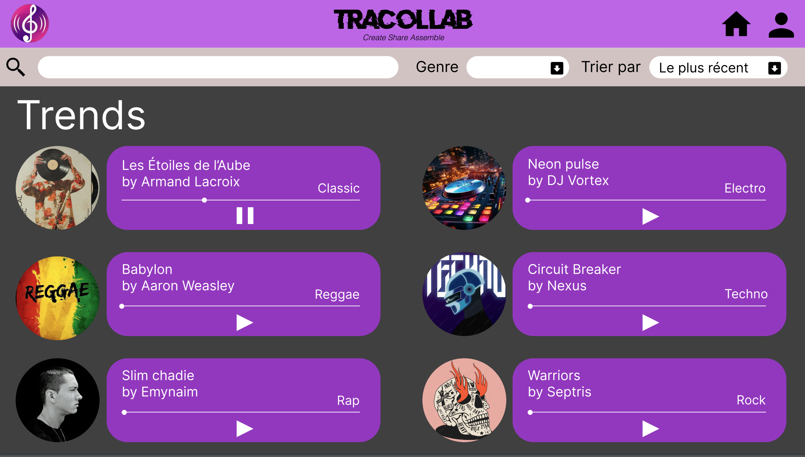
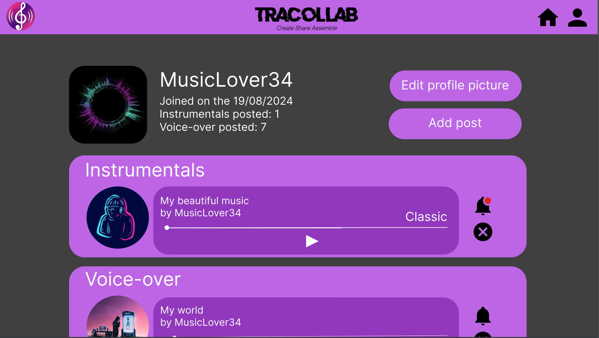

Upload, Sing, and Share Your Tracks!
Upload your voiceless tracks, sing over them, and share your creations with the world.
Three Reasons Why Tracollab is Perfect for You:
01.
Upload your voiceless tracks effortlessly.
Simply upload your instrumental tracks onto our platform, where others can discover and add their vocals to create something new.
02.
Collaborate with singers from around the world.
Our community of singers is ready to turn your tracks into full-fledged songs. Join the collaboration and watch your music come to life.
03.
Share your new creations with ease.
Once your track is complete, share it with the world or keep it within the community. The choice is yours!

